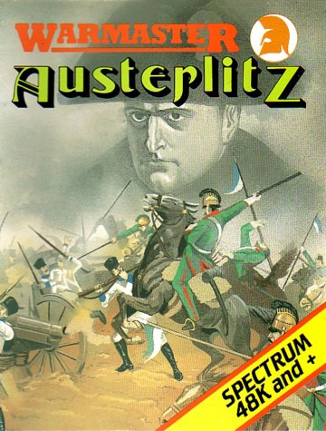
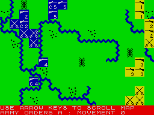

Austerlitz


{kind=link}

| Publisher: | Lothlorien |
| Price: | £9.95 |
| Year: | 1985 |
| Source: | CRASH, Issue 24 |

Imagine a cold December morning in 1807. Around 150,000 men are gathered on the field of battle before some of the most powerful leaders of Europe — and you have Austerlitz, Lothlorien’s successor to Waterloo in their solo Warmaster series.
The packaging for Austerlitz is the same ‘video case’ affair that graced their previous effort. Inside the beautiful case, there’s the usual manual and cassette. I was given photostats of the manual pages, as the finished booklet has not yet gone to print. However, as with Waterloo, the finished instructions will be in a slim, glossy A5 size booklet. In fact, much of the layout and text has been lifted from the previous game, as both use the same rules system.

of the screen. Never mind the quantity
though, what about the quality?
The manual provides all the details on the mechanics of play, historical notes to accompany the game itself and character sketches of Napoleon’s Corps Commanders (a brilliant idea which unfortunately couldn’t be incorporated in Waterloo). All the instructions are clear and concise and within minutes of reading them you should be able to begin the game.
Austerlitz has three levels of difficulty. The first is a training level to allow you to become accustomed to the game. If you are familiar with the system (as I was after playing Waterloo for ages), this level fails to provide serious competition. However, do not under-estimate the difficulty of other levels. The second is the standard game which takes some time to achieve a good result on, but the third alters some of the setup conditions pertaining to the efficiency of the Austro-Russian forces (otherwise known as the computer), in order to create a very difficult situation for the French.
Once the game level has been selected, the battlefield is displayed. This is approximately four times the size of the screen display and can be viewed by scrolling with the cursor keys (making use of a scrolling routine that would grace many an arcade game, at that). The player’s units (French) are displayed in blue whilst the Austro-Russians are shown in yellow. Terrain features are simply, but adequately defined and the only new feature is the frozen lake — a nasty affair which should be avoided at all costs (unless you can force the enemy onto it).
Many of the other details of the game come directly from its predecessor; infantry and cavalry actions only; terrain effects on movement; unit display and movement and combat procedure. Units are displayed as character blocks with crossed swords for cavalry and a rifle for infantry. Whether or not they are Commanders is also shown, as is the Corps they belong to. If desired, unit strength and morale may be shown (although strength only is revealed for enemy units). Combat is automatic, given that one or more units have entered an enemy zone of control (one adjacent character block on any facing from an enemy unit).
One of the interesting ideas employed in the game is the use of limited intelligence. This is to simulate the early mists that clung to the battlefield on that December morning and added so much confusion to the battlefield. After the first turn, only those units spotted by your advanced units or those encountered before combat, are revealed. Otherwise, during the computer’s turn, ‘blank squares’ may be seen to begin to move to simulate partial awareness of the Austro-Russian dispositions. Otherwise, you’re in the dark.
Game turns consist of giving orders to all your units and then entering them in one command, to the computer. Before entering your command sequence, moves for any unit may be changed at will. French movement and combat sequences follow, after which the computer’s turn takes place using the same format. It’s during your movement phase that various Corps commanders may offer alternative courses of action. Indeed it may be the case that they are more fully aware of the situation in that area than you, and to begin with, their advice is extremely useful. In more sophisticated games, however, be sure to read the character sketches from the manual. On one occasion, a commander who had been involved in very heavy fighting was down to his last five hundred men when he suggested that rather than retreat to a nearby hill, as I had ordered, he could intercept a 6,000 man infantry unit. On checking the notes, they referred to him as ‘incapable of individual command’ but ‘personally brave: wounded 34 times in combat’.
The game looks almost identical to its predecessor and its aesthetic features are deliberately so. But as with all good wargames, the subtleties of the game are vastly different. Austerlitz plays well and makes an excellent addition to Waterloo. This is another goodie. Get it when you can.
Presentation: 90%
Up to the standard now expected of the Warmaster series
Rules: 87%
The character sketches are an excellent addition to an already superb set of rules
Playability: 87%
Very user friendly
Graphics: 92%
Uncluttered, appealing display
Authenticity: 90%
An excellent simulation
Value for money: 95%
Hardly a byte of unused code
Overall: 93%
Character sketches and limited intelligence make this better than Waterloo. If Lothlorien keep going like this, my ratings will not be able to do them justice